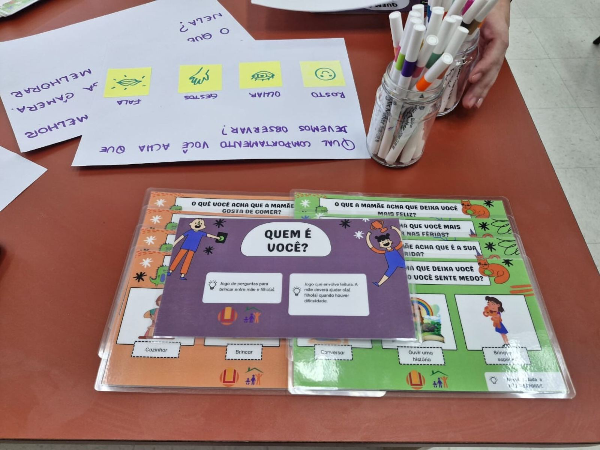
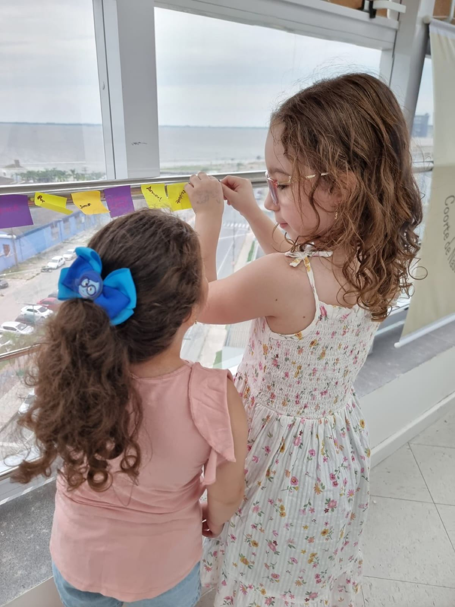
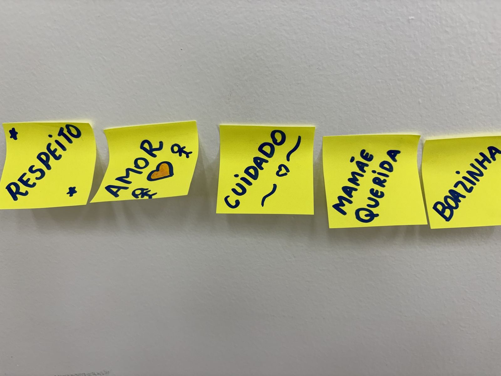

Pesquisa que volta
para a sociedade.
Para nós, impacto não é apenas publicar. É fazer o conhecimento circular, formar pessoas, construir relações e aproximar pesquisa e vida real.
Pesquisa feita com as famílias
Em oficinas com mães e crianças acompanhadas pela Coorte, perguntamos o que deveríamos observar nas interações (rosto, olhar, gestos, fala) e o que melhorar na câmera vestível. Essas conversas fazem parte do co-desenho das câmeras do nosso estudo.
Também levamos materiais para brincar entre mãe e filho(a), como o jogo de perguntas “Quem é você?”.

- Amor
- Cuidado
- Respeito
- Carinho
- Amizade
- Brincar
- Contar histórias
- Compreender
- Afeto
- Dedicação
- Ensinar
- Família
- Amor incondicional
- Espelho
- Desafio
- Mamãe querida

Queremos fazer cada vez mais pesquisa com as pessoas, e não apenas sobre elas.

Conhecimento que pode ser usado
Cada artigo vira uma frase que qualquer pessoa pode entender, sempre com a referência ao estudo publicado.
Ver todas as publicações-
A saúde mental das mães antes e durante a pandemia
Na primeira avaliação durante a pandemia, 29,3% das mães apresentaram provável depressão, 25,9% provável ansiedade generalizada e 40,5% estresse moderado ou grave. Depressão e ansiedade aumentaram em relação ao período anterior à pandemia.
Ler o artigo ↗ -
Medos sobre os filhos e saúde mental materna
A preocupação com o futuro dos filhos e o medo de transmitir COVID-19 a eles estiveram associados a trajetórias mais elevadas de depressão e ansiedade materna.
Ler o artigo ↗ -
Divisão das tarefas domésticas e ansiedade materna
Uma divisão mais equilibrada das tarefas domésticas esteve associada a menor prevalência de ansiedade moderada ou grave entre as mães.
Ler o artigo ↗
O artigo de referência, o Cohort Profile da Coorte Rio Grande 2019, resume o que construímos e abre caminhos para novas colaborações. Conheça a Coorte
Formação que fica
Conheça a equipeParte do nosso impacto fica nas pessoas que passam pelo GPIS. Quem aprende aqui aprende fazendo, com dados reais e perguntas abertas, em epidemiologia, análise de dados e métodos longitudinais.
- 8
- dissertações de mestrado defendidas, de 2021 a 2026
- 1
- pós-doutoranda
- 2
- mestrandos no PPGSP/FURG
- 3
- estudantes de iniciação científica
Equipe atual segundo a página Equipe.
Dissertações defendidas
- 2026
Associação entre sintomas depressivos e viver próximo de espaços públicos de lazer abertos
Felipe Francisco de Castro Passos
- 2024
Associação entre violência por parceiro íntimo e consumo de álcool e tabaco em mães, durante a pandemia da COVID-19, no extremo sul do Brasil
Alex Sandra Avila Minasi
- 2023
Estresse subjetivo e violência por parceiro íntimo praticada contra mães de uma coorte no sul do Brasil durante a pandemia da COVID-19
Denise Lima Meireles
- 2023
Mudança de renda familiar e violência por parceiro íntimo na pandemia por Covid-19: um estudo da coorte de nascimentos de 2019 em Rio Grande – RS
Douglas Pinheiro Caumo
- 2023
O transtorno de ansiedade generalizada esteve associado à divisão desigual do trabalho doméstico durante a pandemia da COVID-19? Estudo transversal desenvolvido no extremo sul do Brasil
Giane Marten Reinheimer
- 2023
Mudanças de hábitos em mães durante o período de isolamento social por COVID-19 no município do Rio Grande, Rio Grande do Sul, Brasil
Jefferson Sales da Silva
- 2022
Fatores reprodutivos associados à depressão perinatal em mulheres no pós-parto precoce no extremo sul do Brasil
Flora Beatriz Proiette Terribele
- 2021
Sono e sintomas de depressão e ansiedade em mulheres no pós-parto imediato: um estudo de base populacional no sul do Brasil
Ingrid Moura Dias
Pesquisa construída em rede
Conheça a redeRedes de colaboração ampliam perguntas, métodos e perspectivas, e tornam a pesquisa mais robusta. Trabalhamos com parceiros no Reino Unido, no Chile e no Peru.


O que queremos construir a seguir
Queremos que cada resultado volte para quem tornou a pesquisa possível.
Estamos construindo uma plataforma de pesquisa longitudinal mais conectada com a sociedade: comunidades participando das decisões, resultados devolvidos de forma compreensível e ciência mais perto da vida cotidiana, sem abrir mão do rigor científico.
Possibilidades de colaboração
O GPIS está aberto a colaborações científicas, projetos conjuntos e parcerias com pesquisadores e instituições.